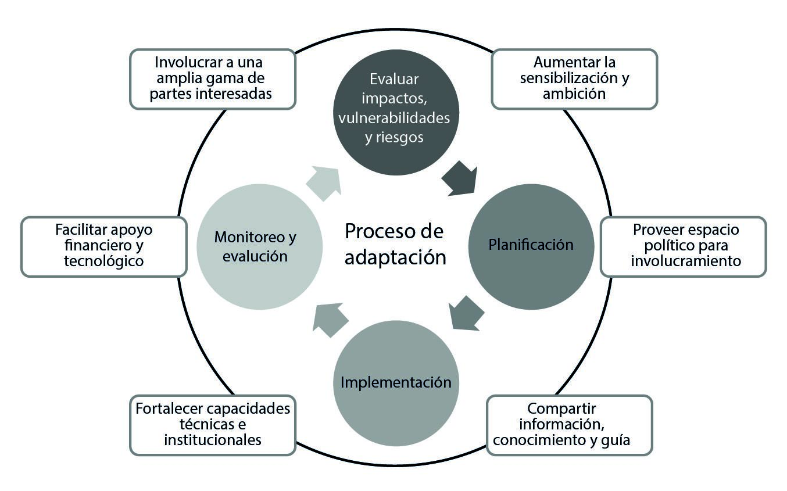
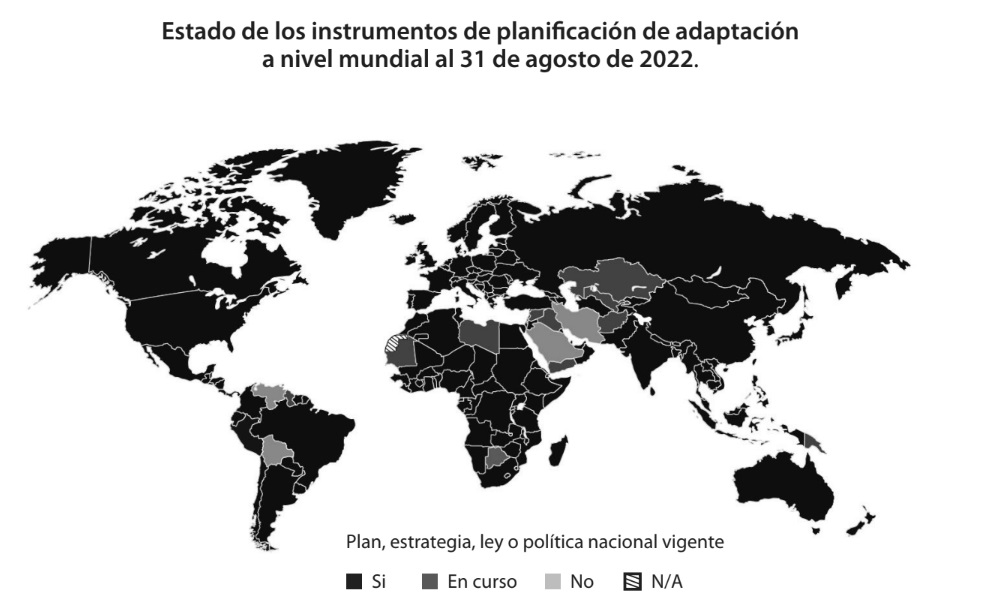
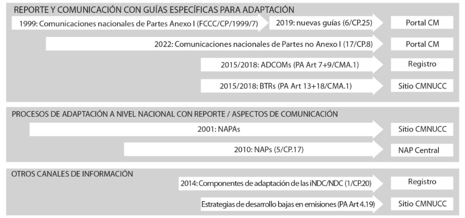

CAPÍTULO 2
El ciclo de política de adaptación a nivel nacional
y su recorrido
en el proceso climático multilateral

María del Pilar Bueno Rubial
Investigadora de CONICET. Ha sido negociadora de cambio climático por Argentina en la Convención Marco de Naciones Unidas sobre Cambio Climático (CMNUCC). Miembro del Comité de Adaptación de la CMNUCC de 2017 a 2021 y copresidenta del mismo.
Exsecretaria de Cambio Climático de la Nación. Directora del Centro de Estudios en Políticas Ambientales de la Facultad de Ciencia Política y Relaciones Internacionales de la Universidad Nacional de Rosario; coordi nadora del Departamento de Ambiente y Desarrollo del Instituto de Relaciones Interna cionales (UNLP). Profesora de grado y posgrado en la Universidad Nacional de Rosario y en otras Universidades del país. Coordinadora Académica de la Diplomatura en Gestión Política del Cambio Climático, Facultad de Ciencia Política y Relaciones Internacionales (UNR). Directora de Argentina 1.5. Subsecretaría de Cambio Climático y Transición Ecológica Justa en la Municipalidad de Rosario.
Introducción
El cambio climático de origen antropogénico genera impactos adversos y pérdidas y daños en los sistemas humanos y naturales. A su vez, dichos impactos se vinculan con las vulnerabilidades preexistentes y afectan de modo desproporcionado a algunas comunidades que, en muchos casos, son quienes menos han contribuido a la generación y propagación del fenómeno.
Conforme al Panel Intergubernamental de Expertos sobre Cambio Climático (IPCC, por sus siglas en inglés), el riesgo es "el marco para comprender los impactos del cambio climático en los sistemas naturales y humanos y su nivel de irreversibilidad". Se mide a través de la vinculación entre las amenazas, la exposición y la vulnerabilidad. Entre los principales impactos observados se mencionan los fenómenos meteorológicos extremos, como los extremos cálidos en la tierra y en el océano, las precipitaciones, sequías e incendios. También se da cuenta de los impactos vinculados con los fenómenos de inicio lento, como la acidificación de los océanos y el aumento del nivel del mar, entre otros.
La adaptación constituye una herramienta y una necesidad para reducir la exposición y la vulnerabilidad frente al cambio climático. Para ello, debe tenerse en cuenta que la ventana de oportunidad para la acción ambiciosa y decidida en adaptación, conforme a los desafíos de cada comunidad, también se va limitando en el tiempo, como sucede con la mitigación. Los impactos irreversibles siguen aumentando, lo cual también se encuentra vinculado a los niveles insuficientes de mitigación. Con lo cual, si bien el incremento de la capacidad de adaptación, comprendida como la "capacidad de los sistemas, las instituciones, los seres humanos y otros organismos para adaptarse ante posibles daños, aprovechar las oportunidades o afrontar las consecuencias", es un componente clave de la acción climática, hay límites que ya se han atravesado (Intergovenmental Panel con Climate Change, 2018 y 2022). Esto dificulta la efectividad de la acción de adaptación para reducir la vulnerabilidad y limitar los riesgos.
Ante este estado de situación, la construcción de un proceso iterativo y participativo de política pública de adaptación se vuelve imperativo. Conforme a la Convención Marco de Naciones Unidas sobre Cambio Climático (CMNUCC), este proceso iterativo consta de momentos que no necesariamente suceden de modo consecutivo, sino que muchas veces se solapan. Estos momentos (diagnóstico, planificación, implementación y monitoreo) han sido integrados en un proceso y documento que los países preparan y presentan a la Convención, y son los planes nacionales de adaptación (PNA o NAP, por sus siglas en inglés). Este capítulo da cuenta de la composición, evolución y valor agregado de dichos documentos y procesos para los países y otros actores.
Las etapas del ciclo de política de adaptación
La comunidad de adaptación a nivel internacional reconoce un conjunto de momentos clave para la elaboración de políticas de adaptación efectivas (véase Figura 1). El inicio del ciclo está dado por la identificación y evaluación de los principales impactos, riesgos y vulnerabilidades asociadas, lo cual depende de cada región y comunidad. Usualmente este proceso se encuentra vinculado a estudios sobre los cambios observados, así como proyecciones de los fenómenos climáticos a mediano y largo plazo. Dichas proyecciones pueden incluir distintos escenarios dados por las concentraciones de gases de efecto invernadero (GEI), tanto como por la temperatura media global o escenarios de emisiones del IPCC (por ejemplo, impactos proyectados en relación con una temperatura media global).

Figura 1. Ciclo iterativo de política de adaptación conforme a la CMNUCC.
Fuente: United Nations Climate Change (S. f.). Introduction. United Nations Climate Change. Disponible en: https://unfccc.int/topics/adaptation-and-resilience/the-big-picture/introduction
Conceptos claves (IPCC, 2018)
Impactos. Se refieren a efectos en las vidas, medios de subsistencia, salud y bienestar, ecosistemas y especies, bienes económicos, sociales y culturales, servicios (incluidos los servicios ecosistémicos) e infraestructuras. También pueden denominarse de este modo a las consecuencias o resultados, y pueden ser adversos o beneficiosos.
Riesgo. Potencial de consecuencias adversas de un peligro relacionado con el clima. O de las respuestas de adaptación o mitigación a dicho peligro en la vida, los medios de subsistencia, la salud y el bienestar, los ecosistemas y las especies, los bienes económicos, sociales y culturales, los servicios (incluidos los servicios ecosistémicos), y la infraestructura. Los riesgos se derivan de la interacción de la vulnerabilidad (del sistema afectado), la exposición a lo largo del tiempo (al peligro), así como del peligro (relacionado con el clima) y la probabilidad de que ocurra.
Vulnerabilidad. Propensión o predisposición a ser afectado negativamente. La vulnerabilidad comprende una variedad de conceptos que incluyen la sensibilidad o susceptibilidad al daño y la falta de capacidad de respuesta y adaptación.
Los procesos de evaluación de impactos, riesgos o vulnerabilidades pueden asociarse a distintos alcances geográficos (regional, nacionales, subnacionales y locales, tanto como transfronterizos) y lapsos temporales (actuales o futuros). Además, pueden integrarse, encadenarse o tratarse en solitario.
Algunas de las metodologías para evaluar riesgos y vulnerabilidades como diagnóstico de adaptación se basan en:
Amenazas: identificar las amenazas frente a fenómenos climáticos extremos, así como las herramientas para enfrentarlos.
Gestión de riesgos: evaluarlos riesgos, incluyendo, por caso, su percepción y la incertidumbre.
Vulnerabilidad: el foco de estas metodologías radica en los factores sociales que condicionan las respuestas bajo una mirada cualitativa y de índole social en contraste con otras metodologías de orden más cuantitativo.
Resiliencia: como concepto extrapolado de las ciencias naturales a la ecología, la resiliencia posibilita considerar los ajustes necesarios para hacer frente a impactos del cambio climático sin perder las características intrínsecas de los ecosistemas. En tal sentido, las metodologías de resiliencia encadenan procesos de adaptación y diferentes escalas.
Otros enfoques, como la adaptación basada en ecosistemas, procuran centrar el análisis en los servicios ecosistémicos y su integridad como modo de reducir la vulnerabilidad e incrementar la resiliencia. También puede ser considerada un enfoque transversal de adaptación.
Elaborado en base a Fünfgeld y McEvoy (2011); Convención Marco de las Naciones Unidas sobre el Cambio Climático y Consultative Group of Experts (1996); Convención Marco de las Naciones Unidas sobre el Cambio Climático y Grupo de Expertos de Países Menos Desarrollados (2012).
Hay distintos criterios para evaluar riesgos climáticos, conforme a: la magnitud de su impacto, incluyendo la cantidad de personas potencialmente afectadas; la probabilidad de ocurrencia; la reversibilidad del fenómeno; la urgencia que puede medirse a través de distintos criterios, como el potencial de daños y pérdidas económicas y no económicas; los tipos de impacto, como pérdidas económicas y no económicas; y las políticas aplicables, entre otros.
Si bien hay diversas metodologías disponibles para realizar evaluaciones de riesgo y de vulnerabilidad, un aspecto común radica en la necesidad de generar mecanismos participativos que permitan considerar y evaluar adecuadamente lo que cada comunidad considera como un riesgo climático. Los diagnósticos participativos constituyen un proceso de aprendizaje colectivo acerca de los impactos, riesgos y vulnerabilidades, así como favorecen la identificación de medidas de adaptación asociadas.
La identificación y posterior priorización de opciones de política como componente sustantivo de la planificación de medidas de adaptación involucra el análisis de costos asociados a cada opción, la identificación de responsables y eventuales colaboradores. También incluye la viabilidad técnica de las soluciones, la factibilidad de su monitoreo y seguimiento en términos de información. Además, tiene en cuenta el análisis de los potenciales beneficios que conllevaría, su efectividad para reducir los riesgos y vulnerabilidades, y su alcance temporal en base a las proyecciones realizadas, entre otros aspectos claves. Las medidas más eficaces son aquellas usualmente denominadas "sin remordimientos", es decir, aquellas que serán positivas incluso si el impacto proyectado no sucediese.
Existen distintas metodologías para priorizar acciones conforme a las guías de planes nacionales de adaptación de la CMNUCC (2012).
Conforme a quién lo lleva adelante:
- Procesos en comunidades: se llevan a cabo mediante métodos de recolección de información, como encuestas o dinámicas de grupo para relevar prioridades.
- Procesos basados en expertos: se identifica un grupo de expertos que, mediante distintos tipos de metodologías como, por ejemplo, la aplicación de cuestionarios, recomienda la aplicación de ciertas opciones.
Conforme a la metodología en sí misma:
- Ponderación en base a criterios: se asigna una calificación de prioridad a ciertas opciones de política a partir de una puntuación con criterios establecidos.
- Por peso o incidencia de indicadores: se identifican criterios y se determina un peso o incidencia de cada criterio por porcentaje o fracción para una evaluación de partes involucradas.
- Análisis costo-beneficio: se busca el equilibrio entre los costos de las opciones y los beneficios de su aplicación para la identificación de opciones que reduzcan riesgos y vulnerabilidades. Conlleva análisis cuantitativos y comparaciones en base a valores monetarios, se focalizan en eficacia económica. Es clave identificar previamente objetivos de adaptación. Un ejemplo es el caso de Uruguay1.
- Análisis de costo-efectividad: se identifican los costos de las opciones de política que apuntan a un mismo objetivo, para ello se requiere claridad sobre el objetivo de adaptación buscado, así como establecer costos, puntos de referencia y comparabilidad. Es útil para evaluar medidas a corto plazo con bajo nivel de arrepentimiento y, por caso, usando un único escenario climático.
- Análisis multicriterio: se evalúan las opciones de adaptación en base a diversos criterios, a los que se le asigna distinto peso según la relevancia que las/los evaluadores estiman. Un ejemplo es el caso de Costa Rica2.
El proceso de planificación involucra, a su vez, la divulgación de la información en todas las etapas y la construcción de procesos participativos conforme a los/as actores/as interesados/as y lo que se busca lograr. Es recomendable que los documentos de planificación se pongan a disposición pública, incluso si fueron elaborados en procesos participativos.
Del mismo modo, cuando se trata de planes nacionales de adaptación, es clave que su construcción y diseminación incluyan a actores subnacionales, lo que representa un desafío jurisdiccional, aunque necesario. La identificación de responsables clave en gobiernos locales, la construcción de capacidades a lo largo de todo el ciclo de política de adaptación, incluyendo la elaboración de proyectos, tanto como el desarrollo de instrumentos normativos que permitan la aplicación de criterios y metodologías a nivel local son algunos de los aspectos a tener en cuenta.
Los procesos de implementación de opciones de adaptación usualmente se encuentran atravesados por nuevas dinámicas de planificación, tanto como por el establecimiento de sistemas de monitoreo y seguimiento. Hay divergencias entre los/as expertos/as para determinar el nivel de implementación de las políticas de adaptación, tales como el progreso a través de sistemas de monitoreo y seguimiento; y el acceso a financiamiento climático de los países en desarrollo.
El monitoreo, evaluación y aprendizaje o MEL (por sus siglas en inglés) busca implementar conocimientos adquiridos a partir de pruebas y análisis realizados de modo periódico con el objetivo de mejorar los resultados de un proceso. Para ello, debe establecerse previamente el objetivo del MEL de modo de recolectar información adecuada. Se puede elaborar y aplicar un sistema de MEL para evaluar tanto el progreso de procesos realizados (por ejemplo, elaboración de programas o estrategias; aplicación de una cierta metodología; reglamentación de una norma, y otros), como los resultados de ciertas políticas (por ejemplo, en qué medida una opción de política reduce el riesgo o la vulnerabilidad).
Sólo un tercio de países han desarrollado hasta 2022 metas cuantificadas de adaptación en sus documentos de adaptación presentados a la CMNUCC. Y la mayoría de estas metas refieren a procesos más que a resultados (United Nations Environment Programme, 2022). Con lo cual, es posible que las opciones de política y su implementación durante las primeras etapas del ciclo contribuyan a procesos más que a resultados, como la conformación y mantenimiento de procesos de gobernanza participativa; la elaboración de documentos, estrategias y normativas.
Hay diversas metodologías disponibles para elaborar sistemas de MEL. Se mencionan algunos ejemplos:
Metodología de la Agencia Alemana para la Cooperación Internacional (GIZ) y el World Resources Institute (WRI). Propone un enfoque de cinco pasos para desarrollar un sistema de seguimiento basado en resultados para proyectos de adaptación: (1) evaluar el contexto de adaptación; (2) identificar la contribución; (3) desarrollar un marco de resultados; (4) definir indicadores y líneas de base; y (5) hacer operativo el monitoreo basado en un sistema de resultados. (GIZ, 2016)
El Instituto Internacional para el Medio Ambiente y el Desarrollo (IIED) ha creado un marco conceptual para monitorear y evaluar la adaptación llamado Seguimiento de la Adaptación y Medición del Desarrollo (TAMD). Se trata de un marco de nueve indicadores para evaluar la gestión institucional del riesgo climático (instituciones, políticas y capacidades) y un esquema para medir el desempeño de la adaptación y el desarrollo (Brooks y Fisher, 2014).
La Organización para la Cooperación y el Desarrollo Económico (OCDE) también ha desarrollado enfoques metodológicos para el seguimiento y la evaluación de la adaptación basada en tres desafíos: (1) evaluar la atribución de una intervención; (2) establecer líneas de base y metas; y (3) conciliar los horizontes temporales más largos con los ciclos de evaluación más cortos. El documento de la OCDE también proporciona una descripción general de las diferentes formas de integrar el aprendizaje en el M&E de modo que sea MEL. Incluida la creación de una fase de aprendizaje en los ciclos de planificación; aprovechando la participación e involucramiento de los beneficiarios y actores clave en el proceso. Y permite institucionalizar una función de aprendizaje dentro del equipo del proyecto o programa (Dinshaw et al., 2014).
El Grupo de Expertos de Países Menos Desarrollados de la CMNUCC (LEG, por sus siglas en inglés) conjuntamente con la Guía
para los Planes Nacionales de Adaptación, elaboró una herramienta de M&E titulada Progreso, efectividad y brechas basada en tres dimensiones: M&E de los planes nacionales de adaptación; M&E de proyectos, programas y políticas de adaptación implementadas y financiadas por agencias y M&E de impactos y resultados. Para ello, la herramienta busca diferenciar entre métricas:
- Métricas para evaluar procesos o una acción llevada a cabo para
lograr un cierto objetivo.
- Métricas para evaluar insumos o lo que ha sido incorporado a los
procesos para lograr la meta propuesta u objetivo.
- Métricas para evaluar productos o servicios generados.
- Métricas para evaluar resultados.
- Métricas para evaluar impactos como efectos de los resultados
alcanzados.
Elaborada en base a Convención Marco de las Naciones Unidas sobre el Cambio Climático y Consultative Group of Experts (2023).
En cuanto al monitoreo y seguimiento de la implementación basado en el financiamiento climático, el Informe de la brecha de adaptación (Adaptation Gap Report [AGR]) lo ha evaluado de distintos modos de 2020 a 2022, aunque siempre con perspectiva de agregación de proyectos financiados a nivel global. En el caso del AGR 2022 se tienen en cuenta los proyectos de adaptación financiados por fondos climáticos, como el Fondo Verde del Clima (GCF, por sus siglas en inglés), el Fondo de Adaptación (AF, por sus siglas en inglés), el Fondo Especial de Cambio Climático (SCCF, por sus siglas en inglés) y el Fondo de Países Menos Desarrollados (LDCF, por sus siglas en ingles). Estos fondos, si bien representan sólo el 9% del financiamiento multilateral de adaptación en 2020, entre 2006 y 2022 movilizaron 4.000 millones de dólares a través de 470 proyectos focalizados en sequía, inundación y la variabilidad en las precipitaciones. El informe contabiliza también otras fuentes, por ejemplo el financiamiento provisto mediante otras opciones, como los principales proveedores bilaterales a través de la base de datos OCDE-DAC.
Tanto en AGR 2021 como 2022 el mensaje es claro, si bien hay brechas de información con respecto a la efectividad de las intervenciones de adaptación llevadas a cabo en relación con los riesgos y los impactos en ascenso; los niveles de implementación actuales no se corresponden con las necesidades ni con los niveles crecientes de impacto y riesgo documentados por la ciencia.
La evolución de los planes nacionales de adaptación como instrumento de política
La adaptación ha tenido un recorrido en las negociaciones climáticas multilaterales en la CMNUCC extremadamente sinuoso y marcado por el ímpetu de los países en desarrollo (Bueno Rubial y Siegele, 2020) de mostrar que:
- La acción de adaptación es urgente conforme a la ciencia.
- La adaptación llevada a cabo por los países en desarrollo constituye un esfuerzo a ser reconocido como parte de la respuesta global frente al cambio climático.
- La adaptación no es solo un problema de política nacional de los estados, sino que parte de la mencionada respuesta global.
- El cambio climático es un fenómeno generado por los países más desarrollados y son quiénes conforme a la CMNUCC y el Acuerdo de París proveen financiamiento, tecnología y construcción de capacidades para que los países en desarrollo puedan llevar adelante sus acciones de adaptación.
- En tal sentido, el hincapié en la mitigación puesto en los primeros años de cooperación en el marco de la CMNUCC dilató la respuesta colectiva en materia de adaptación. Cabe mencionar los hitos que supusieron la creación del Fondo de Adaptación en 2001 y la creación del Programa de Trabajo de Nairobi sobre impactos, vulnerabilidad y adaptación (NWP, por sus siglas en inglés) en la COP11 en 2005, como primer espacio institucional en la CMNUCC para el tratamiento del tópico. El NWP tiene como propósito mejorar la comprensión y evaluación de los impactos, la vulnerabilidad y la adaptación, apoyando los procesos de toma de decisiones.
Si bien el NWP constituyó una primera respuesta multilateral, no fue evaluada como suficiente por los países en desarrollo que ya experimentaban los efectos adversos del cambio climático y esperaban un espacio institucional que pudiera atender sus demandas crecientes y que no fuera sólo considerado como repositorio de información y red de actores (Di Pietro, 2020). En tal sentido, la Hoja de Ruta de Bali para la negociación del fallido Acuerdo de Copenhague y, posteriormente, la Conferencia de Cancún (COP26 de 2010) que constituye la revitalización del proceso multilateral tras los reveses políticos un año antes, favorecieron la creación del Marco de Adaptación de Cancún (CAF, por sus siglas en inglés). El CAF reconoce la urgencia de la adaptación; crea un nuevo mecanismo institucional de asesoramiento técnico, el Comité de Adaptación; e institucionaliza los procesos de planificación de adaptación a nivel nacional. Asimismo, en la COP16, se crea el Fondo Verde para el Clima (GCF, por sus siglas en inglés).
En la relación entre mecanismos de apoyo financiero de adaptación y procesos de planificación de adaptación, cabe mencionar que el LDCF incluyó un mandato de apoyo para que los países menos desarrollados pudieran preparar e implementar programas de acción nacional de adaptación (NAPA, por sus siglas en inglés) que fueron el primer antecedente de los planes nacionales de adaptación (NAPs, por sus siglas en inglés) establecidos en Cancún en 2010. El mismo año de creación del LDCF en 2001 se instituyó el LEG que tuvo entre sus mandatos proveer guía para el desarrollo de NAPA por los LDC.
Teniendo en cuenta la experiencia del LEG en apoyar el trabajo de los LDC para la preparación de los NAPA, la COP le dio el mandato de elaborar guías o directrices para el proceso de NAP mediante la Decisión 5/CP.17 en el contexto de la Conferencia de las Partes realizada en Durban en 2011.
Las directrices para la preparación de NAP han probado ser un instrumento exitoso, en la medida en que más de 10 años luego su preparación, siguen constituyendo una guía válida que nuclea conocimiento y herramientas de la comunidad de adaptación. Asimismo, tienen como principal virtud demostrar que los NAP no son sólo un documento, sino más bien un proceso que, incluso antes del ciclo de política en las bases descritas en el punto 1, requiere una preparación de modo de sostener el proceso exitosamente hasta la finalización del ciclo y su iteración.
Entre los aspectos preparatorios que destacan se encuentran: la construcción de una visión común sobre el proceso y sus objetivos; la conformación de un equipo de trabajo; la evaluación de aspectos contextuales claves a nivel internacional y nacional (condiciones habilitantes y constreñimientos); la identificación de necesidades para el proceso; la identificación de información disponible y brechas; la detección y selección de metodologías para las distintas etapas.
Hay un conjunto de materiales adicionales elaborados por distintos organismos y organizaciones internacionales y regionales que integran el andamiaje construido por la comunidad de adaptación a nivel global. Si bien la cantidad de materiales ha proliferado en gran manera3, se menciona aquí particularmente la herramienta sobre monitoreo y evaluación del progreso, la efectividad y las brechas en el proceso de elaboración e implementación de NAP denominada PEG M&E tool4, y la herramienta para la formulación e implementación de NAP responsivos al género coelaborado por la CMNUCC y el NAP Global Network en 20195.

Figura 2. Fuente:United Nations Environment Programme(2022).
Con el establecimiento de los mecanismos institucionales, políticos, financieros y de apoyo técnico en la CMNUCC para lograr que los países, de modo generalizado, elaboren sus NAP, cabe mencionar que si bien sólo 45 países han cargado sus planes en el Registro de NAP de la CMNUCC6, 14 de los mismos corresponden a países de la región de América Latina y el Caribe, el AGR (United Nations Environment Programme [UNEP], 2023) estima que el 84% de los países han, al menos, establecido instrumentos de planificación de adaptación. Se trata de un número que ha venido creciendo, dado que el AGR 2022 refería al 79% y el AGR 2020 a 72% (UNEP, 2021). No obstante, tal como afirma el IPCC para regiones como América Latina el Caribe, la principal barrera para la implementación de los NAP es el financiamiento (Intergovernmental Panel on Climate Change, 2022).
La complejización de la arquitectura de la CMNUCC y el Acuerdo de París ha llevado a que, en la búsqueda de visibilizar los esfuerzos de adaptación, se haya incorporado componentes de adaptación en todos los documentos que actualmente las Partes presentan. Esto significa que a las tradicionales comunicaciones nacionales cuyas guías ya establecían elementos de adaptación, se adicionan las contribuciones determinadas a nivel nacional (NDC, por sus siglas en inglés)7; las comunicaciones de adaptación8 y los informes bienales de transparencia (BTR, por sus siglas en inglés)9. Todos estos instrumentos tienen una naturaleza eminentemente más internacional, ya sea de comunicación o de reporte donde se articulan las dimensiones temporales de la promesa hacia adelante y de reporte del progreso realizado, hacia atrás.
Es clave construir sinergias entre los documentos relacionados de adaptación que las Partes preparan y presentan a la CMNUCC de modo de evitar duplicaciones y solapamientos. Hay países que ya construyen parte de esta narrativa en los documentos, de modo de construir su propia historia de adaptación. Cabe mencionar el caso de Uruguay que, en su política nacional de cambio climático, establece en su artículo 23 que la NDC opera como un instrumento de implementación de la mencionada política, lo que permite el establecimiento de metas en plazos quinquenales. Similar es el caso de Chile con su Ley Nacional de Cambio Climático N.° 21.455 que alude a la Estrategia de Largo Plazo, la NDC, y otros sistemas de reporte bajo la CMNUCC.
Los NAP pueden operar como principal proceso e instrumento de ambición y acción iterativa en materia de adaptación y, de este modo, otros documentos como los mencionados pueden ir comunicando y reportando su avance de modo consistente. De este modo, el reporte se vuelve más natural y propio del proceso, y menos una actividad extraordinaria que requiere esfuerzos adicionales desmedidos y cargas adicionales.

Figura 3. Principales instrumentos de comunicación y reporte con sus respectivas locaciones a nivel internacional y nacional.
Fuente: Convención Marco de las Naciones Unidas sobre el Cambio Climático.
Conclusión
El progreso realizado hasta el momento con respecto a la elaboración de planes nacionales de adaptación es notable. Es uno de los aspectos más destacable de la última década. Sin embargo, las barreras para la implementación aún son significativas, incluyendo el acceso a financiamiento y las fuentes disponibles que, en general, redundan en un mayor endeudamiento de los países en desarrollo.
El continuum dado entre los procesos de evaluación de impactos, riesgos y vulnerabilidades, la identificación de opciones de política, su implementación y monitoreo y seguimiento de resultados permiten pensar en un ciclo de política de modo holístico, que evita las visiones compartimentadas. La arquitectura de adaptación en la CMNUCC se ha desarrollado a través del ciclo de política de adaptación e, incluso, las negociaciones actuales sobre el progreso colectivo a través de la Meta Global de Adaptación también se vinculan a dicho ciclo.
Los NAP han sido exitosos no sólo como herramienta y documento, sino como proceso de construcción de una política y una mirada de adaptación a nivel nacional cuya naturaleza contextual posibilita y requiere el desarrollo de procesos comprensivos y participativos.
1) Ministerio de Ganadería, Agricultura y Pesca de Uruguay (2019). Análisis costo-beneficio aplicado a medidas de adaptación al cambio climático en el sector agropecuario. Ministerio de Ganadería, Agricultura y Pesca de Uruguay. Disponible en: https://www.gub.uy/ministerio-ganaderia-agricultura-pesca/comunicacion/publicaciones/analisis-costo-beneficio-aplicado-medidas-adaptacion-cambio-climatico
2) Corrales, J., Gómez Solano, N. y Apéstegui Guardia, X. (2021). Guía para la priorización de medidas de adaptación al cambio climático utilizando el método Análisis Multicriterio. San José: Dirección de Cambio Climático y Ministerio de Ambiente y Energía de Costa Rica. Disponible en: https://cambioclimatico.go.cr/wp-content/uploads/2021/09/Gui%CC%81a-de-Ana%CC%81lisis-Multicriterio-Gui%CC%81a-para-la-priorizacion-de-medidas-de-adap-tacio%CC%81n-al-cambio-clima%CC%81tico-utilizando-el-Me%CC%81todo-de-Ana%CC%81lisis-Multicriterio.pdf
3) Lista de materiales adicionales a las directrices para la elaboración de NAP identificados por la CMNUCC en UNFCCC (S. f.). Supplementary Materials to the NAP Technical Guidelines. UNFCCC NAP Central. Disponible en:https://www4.unfccc.int/sites/NAPC/Guidelines/Pages/Supplements.aspx
4) Least Developed Countries Expert Group (S. f.). Monitoring and assessing progress,effectiveness and gaps under the process to formulate and implement National Adaptation Plans: The PEG M&E tool. S. d. Disponible en:https://unfccc.int/files/adaptation/application/pdf/50301_04_unfccc_monitoring_tool.pdf
5) NAP Global Network y UNFCCC (2019).Toolkit for a gender-responsive process to formulate and implement
National Adaptation Plans (NAPs). Winnipeg: International Institute for Sustainable Development. Disponible en: https://www4.unfccc.int/sites/NAPC/Documents/Supplements/NAPGenderToolkit2019.pdf
6) United Nations Climate Change (S. f.). Submitted NAPs. S. d. Disponible en: https://napcentral.org/submitted-naps.
7) Desde la adopción de las contribuciones pretendidas determinadas a nivel nacional (INDC, por sus siglas en inglés) en Varsovia en la COP19, reafirmada en Lima en la COP20, los países desarrollados pensaron a las contribuciones como instrumentos de mitigación. Sin embargo, de modo voluntario y no concertado, los países en desarrollo desde la primera INDC, presentada en febrero de 2015 por México, incorporaron componentes de adaptación en búsqueda del balance. Esta perspectiva más comprensiva de las NDC se profundiza en el artículo 3 del Acuerdo de París, que establece un alcance amplio del documento.
8) Una comunicación de adaptación (AdCom) es un documento creado por el Acuerdo de París en sus artículos 7.10 y 7.11 cuyas guías fueron negociadas por las Partes y adoptadas mediante la Decisión 9/CMA.1. El propósito de las AdCom incluye el incremento de la visibilidad y perfil de la adaptación, incluyendo su balance con la mitigación, el fortalecimiento de la acción y apoyo de adaptación para los países en desarrollo. También pretende ser un insumo para el balance mundial y fortalecer la comprensión y aprendizaje sobre las necesidades y acciones de adaptación.
9) Los BTR fueron establecidos mediante la Decisión 18/CMA.1 que instituye los MPG (modalidades, procedimientos y lineamientos) como principal mecanismo de reporte bienal del Marco reforzado de transparencia bajo el Acuerdo de París. El capítulo 4 de los MPG y conforme al artículo 13.8 del Acuerdo se establece los elementos para el reporte de adaptación, que se llama A-BTR y cuyos materiales de entrenamiento ha generado el CGE recientemente.
United Nations Framework Convention on Climate Change (2023). CGE Training Material on Reporting Information Related to Climate Change Impacts and Adaptation. S. d. Disponible en https://unfccc.int/sites/default/files/resource/CGE%20Training%20materials%20A-BTR.pdf